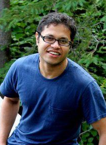

Home
|  | Advanced AI Lab
|
About
I am the AI Technical Lead at the America Research Lab, LG Electronics. Prior to that I was a Senior Research Scientist at Robert Bosch Research and Technology Center.
Project Lead for,
Learning on Edge Devices,
Generative Adversarial Networks (GAN) research.
Advanced AutoML algorithms (Collaborator: UofT's Prof. Roger Grosse)
In addition, I have worked on technologies like,
Scalable HD Maps for Autonomous Cars (graph SLAM),
Big Data and Large Scale Machine Learning,
Kernel-Based ML Algorithms,
Interpretation of Black-Box models.
Also I have worked on use cases in domains like, Automotive, Health Care, Thermo-Technology, Manufacturing etc.
Prior to that, I did my PhD on Analysis and Extensions of Universum Learning with Prof. Vladimir Cherkassky.
I am on the Editorial Board of Neural Engineering Processing Letters. Further, I have served in the Program of several International Journals and Conferences.
Education (Resume)
PhD, Electrical and Computer Engineering,University of Minnesota(Twin City),MN.
B. Tech Electronics and Telecommunication, N.I.T Silchar, India.
Contact
5150 Great America Pkwy,
LG Electronics,
Santa Clara, CA 95054
Disclaimer: The views and opinions expressed in this website are strictly those of the site's author.